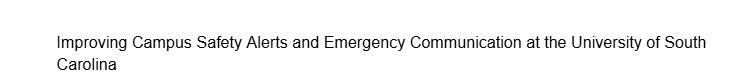

About Me
My mission is to build a successful and financially stable life while making the people around me proud through my actions and accomplishments. I strive to bring fun and positivity into the lives of others, live responsibly by caring for the environment, and continuously work on bettering myself by leaving behind unhelpful habits. I want to be known as someone who pursued success with integrity, joy, and responsibility.
Skills
-
My resume:
PDF version |
HTML version
Highlighted Projects
Problem Statement
Improving Campus Safety Alerts and Emergency Communication at the University of South Carolina
Affinity Diagram

These factors highlight the current gaps in trust, communication, relevance, and technology within USC’s safety system, showing why your app must deliver clearer, faster, and more reliable alerts that students can actually trust and act on.
Sketches

A simple concept layout showing the core safety features: login, role selection, live map, and SOS access.
CSCE 190 Retired Code

Code from a retired course
Contact Me
Email: mtn1@email.sc.edu